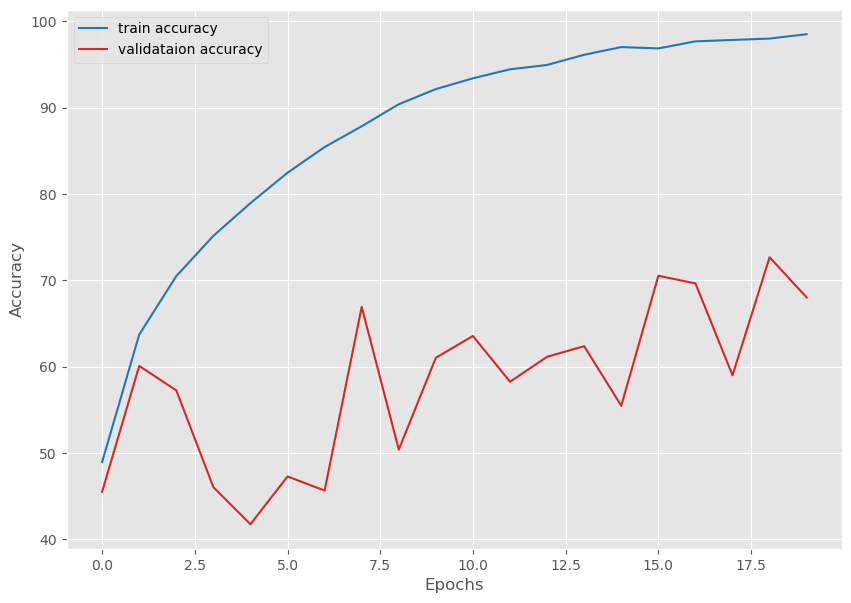
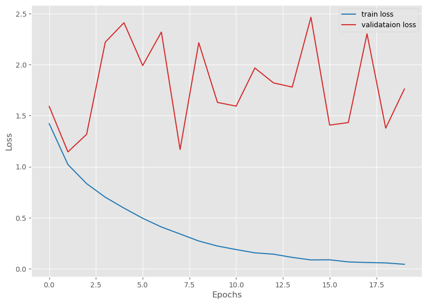

import torchResnet 18 from Scratch
Resnet 18 from Scratch
torch.cuda.is_available()Truefrom fastbook import search_images_ddg
from fastdownload import download_url
from fastai.vision.all import *
from nbdevAuto import functions
import os
import shutilimport torch.nn as nn
import torch
from torch import Tensor
from typing import Typeclass BasicBlock(nn.Module):
def __init__(
self,
in_channels: int,
out_channels: int,
stride: int = 1,
expansion: int = 1,
downsample: nn.Module = None
) -> None:
super(BasicBlock, self).__init__()
# Multiplicative factor for the subsequent conv2d layer's output channels.
# It is 1 for ResNet18 and ResNet34.
self.expansion = expansion
self.downsample = downsample
self.conv1 = nn.Conv2d(
in_channels,
out_channels,
kernel_size=3,
stride=stride,
padding=1,
bias=False
)
self.bn1 = nn.BatchNorm2d(out_channels)
self.relu = nn.ReLU(inplace=True)
self.conv2 = nn.Conv2d(
out_channels,
out_channels*self.expansion,
kernel_size=3,
padding=1,
bias=False
)
self.bn2 = nn.BatchNorm2d(out_channels*self.expansion)
def forward(self, x: Tensor) -> Tensor:
identity = x
out = self.conv1(x)
out = self.bn1(out)
out = self.relu(out)
out = self.conv2(out)
out = self.bn2(out)
if self.downsample is not None:
identity = self.downsample(x)
out += identity
out = self.relu(out)
return outclass ResNet(nn.Module):
def __init__(
self,
img_channels: int,
num_layers: int,
block: Type[BasicBlock],
num_classes: int = 1000
) -> None:
super(ResNet, self).__init__()
if num_layers == 18:
# The following `layers` list defines the number of `BasicBlock`
# to use to build the network and how many basic blocks to stack
# together.
layers = [2, 2, 2, 2]
self.expansion = 1
self.in_channels = 64
# All ResNets (18 to 152) contain a Conv2d => BN => ReLU for the first
# three layers. Here, kernel size is 7.
self.conv1 = nn.Conv2d(
in_channels=img_channels,
out_channels=self.in_channels,
kernel_size=7,
stride=2,
padding=3,
bias=False
)
self.bn1 = nn.BatchNorm2d(self.in_channels)
self.relu = nn.ReLU(inplace=True)
self.maxpool = nn.MaxPool2d(kernel_size=3, stride=2, padding=1)
self.layer1 = self._make_layer(block, 64, layers[0])
self.layer2 = self._make_layer(block, 128, layers[1], stride=2)
self.layer3 = self._make_layer(block, 256, layers[2], stride=2)
self.layer4 = self._make_layer(block, 512, layers[3], stride=2)
self.avgpool = nn.AdaptiveAvgPool2d((1, 1))
self.fc = nn.Linear(512*self.expansion, num_classes)
def _make_layer(
self,
block: Type[BasicBlock],
out_channels: int,
blocks: int,
stride: int = 1
) -> nn.Sequential:
downsample = None
if stride != 1:
"""
This should pass from `layer2` to `layer4` or
when building ResNets50 and above. Section 3.3 of the paper
Deep Residual Learning for Image Recognition
(https://arxiv.org/pdf/1512.03385v1.pdf).
"""
downsample = nn.Sequential(
nn.Conv2d(
self.in_channels,
out_channels*self.expansion,
kernel_size=1,
stride=stride,
bias=False
),
nn.BatchNorm2d(out_channels * self.expansion),
)
layers = []
layers.append(
block(
self.in_channels, out_channels, stride, self.expansion, downsample
)
)
self.in_channels = out_channels * self.expansion
for i in range(1, blocks):
layers.append(block(
self.in_channels,
out_channels,
expansion=self.expansion
))
return nn.Sequential(*layers)
def forward(self, x: Tensor) -> Tensor:
x = self.conv1(x)
x = self.bn1(x)
x = self.relu(x)
x = self.maxpool(x)
x = self.layer1(x)
x = self.layer2(x)
x = self.layer3(x)
x = self.layer4(x)
# The spatial dimension of the final layer's feature
# map should be (7, 7) for all ResNets.
#print('Dimensions of the last convolutional feature map: ', x.shape)
x = self.avgpool(x)
x = torch.flatten(x, 1)
x = self.fc(x)
return xtensor = torch.rand([1, 3, 224, 224])
model = ResNet(img_channels=3, num_layers=18, block=BasicBlock, num_classes=1000)
print(model)ResNet(
(conv1): Conv2d(3, 64, kernel_size=(7, 7), stride=(2, 2), padding=(3, 3), bias=False)
(bn1): BatchNorm2d(64, eps=1e-05, momentum=0.1, affine=True, track_running_stats=True)
(relu): ReLU(inplace=True)
(maxpool): MaxPool2d(kernel_size=3, stride=2, padding=1, dilation=1, ceil_mode=False)
(layer1): Sequential(
(0): BasicBlock(
(conv1): Conv2d(64, 64, kernel_size=(3, 3), stride=(1, 1), padding=(1, 1), bias=False)
(bn1): BatchNorm2d(64, eps=1e-05, momentum=0.1, affine=True, track_running_stats=True)
(relu): ReLU(inplace=True)
(conv2): Conv2d(64, 64, kernel_size=(3, 3), stride=(1, 1), padding=(1, 1), bias=False)
(bn2): BatchNorm2d(64, eps=1e-05, momentum=0.1, affine=True, track_running_stats=True)
)
(1): BasicBlock(
(conv1): Conv2d(64, 64, kernel_size=(3, 3), stride=(1, 1), padding=(1, 1), bias=False)
(bn1): BatchNorm2d(64, eps=1e-05, momentum=0.1, affine=True, track_running_stats=True)
(relu): ReLU(inplace=True)
(conv2): Conv2d(64, 64, kernel_size=(3, 3), stride=(1, 1), padding=(1, 1), bias=False)
(bn2): BatchNorm2d(64, eps=1e-05, momentum=0.1, affine=True, track_running_stats=True)
)
)
(layer2): Sequential(
(0): BasicBlock(
(downsample): Sequential(
(0): Conv2d(64, 128, kernel_size=(1, 1), stride=(2, 2), bias=False)
(1): BatchNorm2d(128, eps=1e-05, momentum=0.1, affine=True, track_running_stats=True)
)
(conv1): Conv2d(64, 128, kernel_size=(3, 3), stride=(2, 2), padding=(1, 1), bias=False)
(bn1): BatchNorm2d(128, eps=1e-05, momentum=0.1, affine=True, track_running_stats=True)
(relu): ReLU(inplace=True)
(conv2): Conv2d(128, 128, kernel_size=(3, 3), stride=(1, 1), padding=(1, 1), bias=False)
(bn2): BatchNorm2d(128, eps=1e-05, momentum=0.1, affine=True, track_running_stats=True)
)
(1): BasicBlock(
(conv1): Conv2d(128, 128, kernel_size=(3, 3), stride=(1, 1), padding=(1, 1), bias=False)
(bn1): BatchNorm2d(128, eps=1e-05, momentum=0.1, affine=True, track_running_stats=True)
(relu): ReLU(inplace=True)
(conv2): Conv2d(128, 128, kernel_size=(3, 3), stride=(1, 1), padding=(1, 1), bias=False)
(bn2): BatchNorm2d(128, eps=1e-05, momentum=0.1, affine=True, track_running_stats=True)
)
)
(layer3): Sequential(
(0): BasicBlock(
(downsample): Sequential(
(0): Conv2d(128, 256, kernel_size=(1, 1), stride=(2, 2), bias=False)
(1): BatchNorm2d(256, eps=1e-05, momentum=0.1, affine=True, track_running_stats=True)
)
(conv1): Conv2d(128, 256, kernel_size=(3, 3), stride=(2, 2), padding=(1, 1), bias=False)
(bn1): BatchNorm2d(256, eps=1e-05, momentum=0.1, affine=True, track_running_stats=True)
(relu): ReLU(inplace=True)
(conv2): Conv2d(256, 256, kernel_size=(3, 3), stride=(1, 1), padding=(1, 1), bias=False)
(bn2): BatchNorm2d(256, eps=1e-05, momentum=0.1, affine=True, track_running_stats=True)
)
(1): BasicBlock(
(conv1): Conv2d(256, 256, kernel_size=(3, 3), stride=(1, 1), padding=(1, 1), bias=False)
(bn1): BatchNorm2d(256, eps=1e-05, momentum=0.1, affine=True, track_running_stats=True)
(relu): ReLU(inplace=True)
(conv2): Conv2d(256, 256, kernel_size=(3, 3), stride=(1, 1), padding=(1, 1), bias=False)
(bn2): BatchNorm2d(256, eps=1e-05, momentum=0.1, affine=True, track_running_stats=True)
)
)
(layer4): Sequential(
(0): BasicBlock(
(downsample): Sequential(
(0): Conv2d(256, 512, kernel_size=(1, 1), stride=(2, 2), bias=False)
(1): BatchNorm2d(512, eps=1e-05, momentum=0.1, affine=True, track_running_stats=True)
)
(conv1): Conv2d(256, 512, kernel_size=(3, 3), stride=(2, 2), padding=(1, 1), bias=False)
(bn1): BatchNorm2d(512, eps=1e-05, momentum=0.1, affine=True, track_running_stats=True)
(relu): ReLU(inplace=True)
(conv2): Conv2d(512, 512, kernel_size=(3, 3), stride=(1, 1), padding=(1, 1), bias=False)
(bn2): BatchNorm2d(512, eps=1e-05, momentum=0.1, affine=True, track_running_stats=True)
)
(1): BasicBlock(
(conv1): Conv2d(512, 512, kernel_size=(3, 3), stride=(1, 1), padding=(1, 1), bias=False)
(bn1): BatchNorm2d(512, eps=1e-05, momentum=0.1, affine=True, track_running_stats=True)
(relu): ReLU(inplace=True)
(conv2): Conv2d(512, 512, kernel_size=(3, 3), stride=(1, 1), padding=(1, 1), bias=False)
(bn2): BatchNorm2d(512, eps=1e-05, momentum=0.1, affine=True, track_running_stats=True)
)
)
(avgpool): AdaptiveAvgPool2d(output_size=(1, 1))
(fc): Linear(in_features=512, out_features=1000, bias=True)
)# Total parameters and trainable parameters.
total_params = sum(p.numel() for p in model.parameters())
print(f"{total_params:,} total parameters.")
total_trainable_params = sum(
p.numel() for p in model.parameters() if p.requires_grad)
print(f"{total_trainable_params:,} training parameters.")
output = model(tensor)11,689,512 total parameters.
11,689,512 training parameters.import matplotlib.pyplot as plt
import os
from torch.utils.data import DataLoader
from torchvision import datasets
from torchvision.transforms import ToTensor
plt.style.use('ggplot')
def get_data(batch_size=64):
# CIFAR10 training dataset.
dataset_train = datasets.CIFAR10(
root='data',
train=True,
download=True,
transform=ToTensor(),
)
# CIFAR10 validation dataset.
dataset_valid = datasets.CIFAR10(
root='data',
train=False,
download=True,
transform=ToTensor(),
)
# Create data loaders.
train_loader = DataLoader(
dataset_train,
batch_size=batch_size,
shuffle=True
)
valid_loader = DataLoader(
dataset_valid,
batch_size=batch_size,
shuffle=False
)
return train_loader, valid_loaderdef save_plots(train_acc, valid_acc, train_loss, valid_loss, name=None):
"""
Function to save the loss and accuracy plots to disk.
"""
# Accuracy plots.
plt.figure(figsize=(10, 7))
plt.plot(
train_acc, color='tab:blue', linestyle='-',
label='train accuracy'
)
plt.plot(
valid_acc, color='tab:red', linestyle='-',
label='validataion accuracy'
)
plt.xlabel('Epochs')
plt.ylabel('Accuracy')
plt.legend()
plt.show()
# Loss plots.
plt.figure(figsize=(10, 7))
plt.plot(
train_loss, color='tab:blue', linestyle='-',
label='train loss'
)
plt.plot(
valid_loss, color='tab:red', linestyle='-',
label='validataion loss'
)
plt.xlabel('Epochs')
plt.ylabel('Loss')
plt.legend()
plt.show()import torch
from tqdm import tqdm
# Training function.
def train(model, trainloader, optimizer, criterion, device):
model.train()
print('Training')
train_running_loss = 0.0
train_running_correct = 0
counter = 0
for i, data in tqdm(enumerate(trainloader), total=len(trainloader)):
counter += 1
image, labels = data
image = image.to(device)
labels = labels.to(device)
optimizer.zero_grad()
# Forward pass.
outputs = model(image)
# Calculate the loss.
loss = criterion(outputs, labels)
train_running_loss += loss.item()
# Calculate the accuracy.
_, preds = torch.max(outputs.data, 1)
train_running_correct += (preds == labels).sum().item()
# Backpropagation
loss.backward()
# Update the weights.
optimizer.step()
# Loss and accuracy for the complete epoch.
epoch_loss = train_running_loss / counter
# epoch_acc = 100. * (train_running_correct / len(trainloader.dataset))
epoch_acc = 100. * (train_running_correct / len(trainloader.dataset))
return epoch_loss, epoch_acc# Validation function.
def validate(model, testloader, criterion, device):
model.eval()
print('Validation')
valid_running_loss = 0.0
valid_running_correct = 0
counter = 0
with torch.no_grad():
for i, data in tqdm(enumerate(testloader), total=len(testloader)):
counter += 1
image, labels = data
image = image.to(device)
labels = labels.to(device)
# Forward pass.
outputs = model(image)
# Calculate the loss.
loss = criterion(outputs, labels)
valid_running_loss += loss.item()
# Calculate the accuracy.
_, preds = torch.max(outputs.data, 1)
valid_running_correct += (preds == labels).sum().item()
# Loss and accuracy for the complete epoch.
epoch_loss = valid_running_loss / counter
epoch_acc = 100. * (valid_running_correct / len(testloader.dataset))
return epoch_loss, epoch_accimport torch
import torch.nn as nn
import torch.optim as optim
import argparse
import numpy as np
import random
# Set seed.
seed = 42
torch.manual_seed(seed)
torch.cuda.manual_seed(seed)
torch.backends.cudnn.deterministic = True
torch.backends.cudnn.benchmark = True
np.random.seed(seed)
random.seed(seed)# Learning and training parameters.
epochs = 20
batch_size = 64
learning_rate = 0.01
device = torch.device('cuda:0' if torch.cuda.is_available() else 'cpu')
train_loader, valid_loader = get_data(batch_size=batch_size)
# Define model based on the argument parser string.
print('[INFO]: Training ResNet18 built from scratch...')
model = ResNet(img_channels=3, num_layers=18, block=BasicBlock, num_classes=10).to(device)
plot_name = 'resnet_scratch'
# print(model)
# Total parameters and trainable parameters.
total_params = sum(p.numel() for p in model.parameters())
print(f"{total_params:,} total parameters.")
total_trainable_params = sum(
p.numel() for p in model.parameters() if p.requires_grad)
print(f"{total_trainable_params:,} training parameters.")
# Optimizer.
optimizer = optim.SGD(model.parameters(), lr=learning_rate)
# Loss function.
criterion = nn.CrossEntropyLoss()Files already downloaded and verified
Files already downloaded and verified
[INFO]: Training ResNet18 built from scratch...
11,181,642 total parameters.
11,181,642 training parameters.# Lists to keep track of losses and accuracies.
train_loss, valid_loss = [], []
train_acc, valid_acc = [], []
# Start the training.
for epoch in range(epochs):
print(f"[INFO]: Epoch {epoch+1} of {epochs}")
train_epoch_loss, train_epoch_acc = train(
model,
train_loader,
optimizer,
criterion,
device
)
valid_epoch_loss, valid_epoch_acc = validate(
model,
valid_loader,
criterion,
device
)
train_loss.append(train_epoch_loss)
valid_loss.append(valid_epoch_loss)
train_acc.append(train_epoch_acc)
valid_acc.append(valid_epoch_acc)
print(f"Training loss: {train_epoch_loss:.3f}, training acc: {train_epoch_acc:.3f}")
print(f"Validation loss: {valid_epoch_loss:.3f}, validation acc: {valid_epoch_acc:.3f}")
print('-'*50)
# Save the loss and accuracy plots.
save_plots(
train_acc,
valid_acc,
train_loss,
valid_loss,
name=plot_name
)
print('TRAINING COMPLETE')[INFO]: Epoch 1 of 20
Training
Validation
Training loss: 1.421, training acc: 48.966
Validation loss: 1.590, validation acc: 45.520
--------------------------------------------------
[INFO]: Epoch 2 of 20
Training
Validation
Training loss: 1.021, training acc: 63.716
Validation loss: 1.145, validation acc: 60.090
--------------------------------------------------
[INFO]: Epoch 3 of 20
Training
Validation
Training loss: 0.834, training acc: 70.488
Validation loss: 1.317, validation acc: 57.260
--------------------------------------------------
[INFO]: Epoch 4 of 20
Training
Validation
Training loss: 0.701, training acc: 75.158
Validation loss: 2.220, validation acc: 46.050
--------------------------------------------------
[INFO]: Epoch 5 of 20
Training
Validation
Training loss: 0.595, training acc: 78.946
Validation loss: 2.410, validation acc: 41.760
--------------------------------------------------
[INFO]: Epoch 6 of 20
Training
Validation
Training loss: 0.495, training acc: 82.466
Validation loss: 1.990, validation acc: 47.290
--------------------------------------------------
[INFO]: Epoch 7 of 20
Training
Validation
Training loss: 0.410, training acc: 85.436
Validation loss: 2.319, validation acc: 45.660
--------------------------------------------------
[INFO]: Epoch 8 of 20
Training
Validation
Training loss: 0.341, training acc: 87.844
Validation loss: 1.169, validation acc: 66.930
--------------------------------------------------
[INFO]: Epoch 9 of 20
Training
Validation
Training loss: 0.272, training acc: 90.396
Validation loss: 2.214, validation acc: 50.400
--------------------------------------------------
[INFO]: Epoch 10 of 20
Training
Validation
Training loss: 0.223, training acc: 92.148
Validation loss: 1.630, validation acc: 61.040
--------------------------------------------------
[INFO]: Epoch 11 of 20
Training
Validation
Training loss: 0.189, training acc: 93.398
Validation loss: 1.593, validation acc: 63.560
--------------------------------------------------
[INFO]: Epoch 12 of 20
Training
Validation
Training loss: 0.157, training acc: 94.440
Validation loss: 1.967, validation acc: 58.260
--------------------------------------------------
[INFO]: Epoch 13 of 20
Training
Validation
Training loss: 0.143, training acc: 94.946
Validation loss: 1.820, validation acc: 61.150
--------------------------------------------------
[INFO]: Epoch 14 of 20
Training
Validation
Training loss: 0.112, training acc: 96.124
Validation loss: 1.780, validation acc: 62.380
--------------------------------------------------
[INFO]: Epoch 15 of 20
Training
Validation
Training loss: 0.087, training acc: 97.016
Validation loss: 2.463, validation acc: 55.470
--------------------------------------------------
[INFO]: Epoch 16 of 20
Training
Validation
Training loss: 0.088, training acc: 96.860
Validation loss: 1.407, validation acc: 70.530
--------------------------------------------------
[INFO]: Epoch 17 of 20
Training
Validation
Training loss: 0.068, training acc: 97.678
Validation loss: 1.432, validation acc: 69.650
--------------------------------------------------
[INFO]: Epoch 18 of 20
Training
Validation
Training loss: 0.062, training acc: 97.840
Validation loss: 2.301, validation acc: 59.010
--------------------------------------------------
[INFO]: Epoch 19 of 20
Training
Validation
Training loss: 0.058, training acc: 98.000
Validation loss: 1.378, validation acc: 72.670
--------------------------------------------------
[INFO]: Epoch 20 of 20
Training
Validation
Training loss: 0.044, training acc: 98.504
Validation loss: 1.761, validation acc: 68.020
--------------------------------------------------
TRAINING COMPLETE100%|██████████████████████████████████████████████████████████████████████| 782/782 [00:17<00:00, 44.98it/s]
100%|██████████████████████████████████████████████████████████████████████| 157/157 [00:01<00:00, 83.11it/s]
100%|██████████████████████████████████████████████████████████████████████| 782/782 [00:15<00:00, 49.09it/s]
100%|██████████████████████████████████████████████████████████████████████| 157/157 [00:01<00:00, 80.99it/s]
100%|██████████████████████████████████████████████████████████████████████| 782/782 [00:14<00:00, 54.44it/s]
100%|██████████████████████████████████████████████████████████████████████| 157/157 [00:01<00:00, 78.70it/s]
100%|██████████████████████████████████████████████████████████████████████| 782/782 [00:17<00:00, 44.86it/s]
100%|██████████████████████████████████████████████████████████████████████| 157/157 [00:02<00:00, 73.68it/s]
100%|██████████████████████████████████████████████████████████████████████| 782/782 [00:17<00:00, 44.30it/s]
100%|██████████████████████████████████████████████████████████████████████| 157/157 [00:02<00:00, 73.34it/s]
100%|██████████████████████████████████████████████████████████████████████| 782/782 [00:15<00:00, 49.72it/s]
100%|██████████████████████████████████████████████████████████████████████| 157/157 [00:02<00:00, 73.03it/s]
100%|██████████████████████████████████████████████████████████████████████| 782/782 [00:18<00:00, 42.86it/s]
100%|██████████████████████████████████████████████████████████████████████| 157/157 [00:02<00:00, 77.01it/s]
100%|██████████████████████████████████████████████████████████████████████| 782/782 [00:15<00:00, 49.12it/s]
100%|██████████████████████████████████████████████████████████████████████| 157/157 [00:02<00:00, 76.58it/s]
100%|██████████████████████████████████████████████████████████████████████| 782/782 [00:14<00:00, 52.23it/s]
100%|██████████████████████████████████████████████████████████████████████| 157/157 [00:02<00:00, 78.26it/s]
100%|██████████████████████████████████████████████████████████████████████| 782/782 [00:14<00:00, 53.12it/s]
100%|██████████████████████████████████████████████████████████████████████| 157/157 [00:02<00:00, 76.25it/s]
100%|██████████████████████████████████████████████████████████████████████| 782/782 [00:14<00:00, 52.97it/s]
100%|██████████████████████████████████████████████████████████████████████| 157/157 [00:01<00:00, 79.03it/s]
100%|██████████████████████████████████████████████████████████████████████| 782/782 [00:19<00:00, 39.58it/s]
100%|██████████████████████████████████████████████████████████████████████| 157/157 [00:02<00:00, 75.93it/s]
100%|██████████████████████████████████████████████████████████████████████| 782/782 [00:17<00:00, 43.74it/s]
100%|██████████████████████████████████████████████████████████████████████| 157/157 [00:02<00:00, 72.56it/s]
100%|██████████████████████████████████████████████████████████████████████| 782/782 [00:15<00:00, 50.41it/s]
100%|██████████████████████████████████████████████████████████████████████| 157/157 [00:02<00:00, 77.98it/s]
100%|██████████████████████████████████████████████████████████████████████| 782/782 [00:15<00:00, 51.22it/s]
100%|██████████████████████████████████████████████████████████████████████| 157/157 [00:01<00:00, 78.64it/s]
100%|██████████████████████████████████████████████████████████████████████| 782/782 [00:15<00:00, 51.76it/s]
100%|██████████████████████████████████████████████████████████████████████| 157/157 [00:02<00:00, 72.27it/s]
100%|██████████████████████████████████████████████████████████████████████| 782/782 [00:16<00:00, 46.56it/s]
100%|██████████████████████████████████████████████████████████████████████| 157/157 [00:02<00:00, 70.33it/s]
100%|██████████████████████████████████████████████████████████████████████| 782/782 [00:17<00:00, 45.68it/s]
100%|██████████████████████████████████████████████████████████████████████| 157/157 [00:02<00:00, 69.50it/s]
100%|██████████████████████████████████████████████████████████████████████| 782/782 [00:17<00:00, 44.99it/s]
100%|██████████████████████████████████████████████████████████████████████| 157/157 [00:02<00:00, 67.29it/s]
100%|██████████████████████████████████████████████████████████████████████| 782/782 [00:15<00:00, 49.71it/s]
100%|██████████████████████████████████████████████████████████████████████| 157/157 [00:02<00:00, 73.08it/s]
